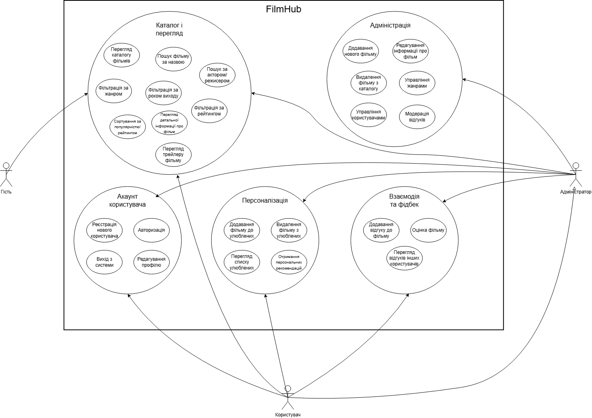

Національний технічний університет України
«Київський політехнічний інститут ім. Ігоря Сікорського»
Факультет інформатики та обчислювальної техніки
Кафедра обчислювальної техніки
на тему «Вибір предметної області. Аналіз, моделювання та розроблення адаптивного web-застосунку.»
студент ІІІ курсу ФІОТ
групи ІО-31
Бобруйко Олексій
Проскура С.Л.

Вибір предметної області. Аналіз, моделювання та розроблення адаптивного web-застосунку.
Актуальність теми
У сучасному світі кількість доступного кіноконтенту зростає щодня. Користувачі потребують зручного інструменту для швидкого пошуку та ознайомлення з інформацією про фільми на будь-яких пристроях. Розробка адаптивного веб-застосунку "FilmHub" дозволяє вирішити проблему зручного доступу до каталогу фільмів.
Мета роботи
Метою лабораторної роботи було розробити адаптивний веб-застосунок FilmHub — сучасний онлайн-каталог фільмів з респонсивним дизайном. У рамках роботи реалізовано повноцінний фронтенд інтерфейсу: семантичну структуру сторінки, адаптивну навігацію з бургер-меню, інтерактивну сітку фільмів, візуальні ефекти та анімації.
Завдання роботи
- Проаналізувати предметну область та сформулювати вимоги до системи.
- Побудувати Use-case та ER-діаграми.
- Реалізувати основні структурні компоненти інтерфейсу (header, main, footer).
- Забезпечити адаптивність дизайну за допомогою Flexbox/Grid, media queries та відносних одиниць.
- Реалізувати бургер-меню та візуальні ефекти.
- Організувати файлову структуру проєкту та розмістити його в GitHub репозиторії.
Об’єкт роботи:
Онлайн-каталоги кінематографічного контенту
Предмет роботи:
Адаптивний веб-інтерфейс та функціональність системи "FilmHub"
Бізнес-логіка роботи:
Користувач відкриває головну сторінку, де бачить сітку популярних фільмів у вигляді інформаційних карток. Кожна картка містить постер, назву, рік виходу, рейтинг та жанр. Користувач може переглядати детальну інформацію про фільм, фільтрувати контент за жанрами та шукати фільми
Функціональні вимоги
- Відображення фільмів у вигляді адаптивної сітки карток.
- Адаптивне навігаційне меню з бургер-меню на мобільних пристроях.
- Header з логотипом "FilmHub" та навігацією (Головна, Каталог, Жанри, Про нас).
- Footer з контактною інформацією.
- Візуальні ефекти при наведенні на картки та плавне відкриття меню.
Нефункціональні вимоги
- Повна адаптивність на пристроях (desktop, tablet, mobile) за допомогою media queries.
- Використання Flexbox або CSS Grid.
- Відносні одиниці вимірювання (rem, %, vw, vh).
- Сучасний чистий дизайн.
- Швидке завантаження сторінки.
- Кросбраузерна сумісність.
Посилання на репозиторій GitHub
https://github.com/BobruikoOleksii-KPI/backend-2026
Use-case діаграма
Актори: Гість (незареєстрований користувач), Зареєстрований користувач, Адміністратор.
Головні use cases: Перегляд каталогу, Пошук фільму, Перегляд деталей фільму, Фільтрація за жанром, Додавання до улюблених, Управління каталогом (для адміністратора).
Рис. 1. Use-case діаграма системи FilmHub

ER-діаграма даних
Сутності:
• Film (id, title, year, rating, description, poster_url)
• Genre (id, name)
• Actor (id, name)
• Director (id, name)
Відносини:
• Film – many-to-many – Genre
• Film belongs to one Director
• Film has many Actors
Рис. 2. ER-діаграма даних для системи FilmHub

Скріншоти інтерфейсу
Рис. 3. Загальний вигляд веб-застосунку «FilmHub» на десктопному пристрої
На даному скріншоті представлено основний інтерфейс застосунку в розширеному режимі. Чітко видно адаптивну сітку карток фільмів, яка рівномірно розподіляється по ширині екрану, сучасний header з логотипом та навігаційним меню, а також коректне використання простору. Дизайн повністю відповідає принципам респонсивної верстки та демонструє використання CSS Grid і Flexbox для створення приємного візуального досвіду на великих екранах.

Рис. 4. Мобільний вигляд застосунку з відкритим бургер-меню
На цьому скріншоті продемонстровано коректну роботу адаптивної навігації на пристроях з невеликою роздільною здатністю. При зменшенні ширини вікна горизонтальне меню автоматично ховається, а замість нього з’являється бургер-іконка. Після натискання на неї меню плавно розгортається зверху вниз з анімацією, зберігаючи при цьому повну функціональність і зручність використання. Така реалізація повністю відповідає сучасним вимогам мобільної адаптивності.

Рис. 5. Демонстрація взаємодії з навігаційними посиланнями (спливаюче повідомлення-заглушка)
Даний скріншот ілюструє обробку кліків по навігаційним посиланням «Головна», «Каталог», «Жанри» та «Про нас». Оскільки на даному етапі розробки ці розділи ще не реалізовані як окремі сторінки, при натисканні на них з’являється інформативне спливаюче повідомлення. Це рішення демонструє правильну роботу JavaScript-обробників подій та забезпечує користувачу зрозумілий feedback, замість того, щоб залишати його без реакції системи.

Висновок
В ході виконання лабораторної роботи було сформульовано ключові складові опису інформаційної системи, побудовано моделі та розроблено адаптивний інтерфейс веб-застосунку "FilmHub". Набуто практичні навички створення респонсивного дизайну, роботи з Git та GitHub.